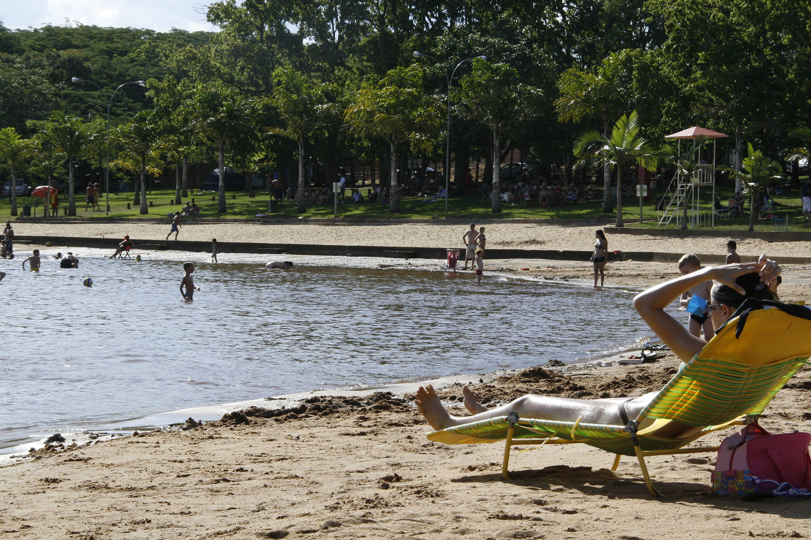
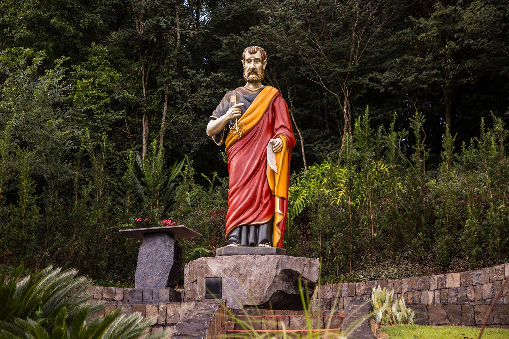
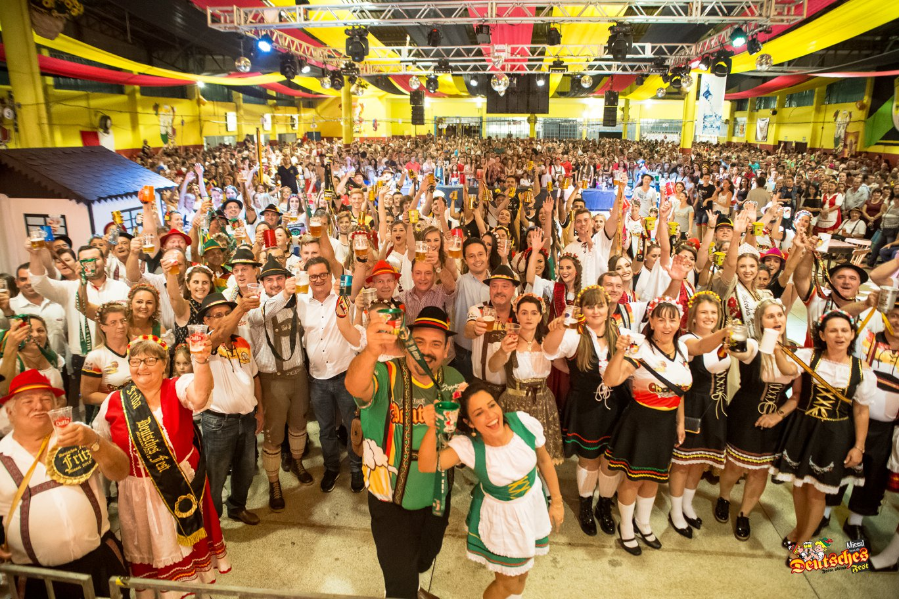

História
O nome do município “Missal” originou-se do fato que os bispos queriam um nome que significasse objeto religioso, para simbolizar de alguma maneira sua origem inserida no fato religioso. Todos conheciam como Gleba dos Bispos, ou Terra dos Bispos. Foram sugeridos vários nomes. O nome escolhido foi MISSAL – inspirado pelos colonizadores e pioneiros, baseado no livro em que o sacerdote se orienta para celebrar a missa – fanal do trabalho espiritual do sacerdote, assim como as terras são fanal do trabalho material do agricultor.Na época da fundação o sacerdote ainda rezava a missa em latim e de costas para o povo. (MISSALE ROMANO) O Concílio Vaticano II (1964) aprovou as traduções dos textos litúrgicos, mas conserva uma única e mesma tradição. Entre tamanha diversidade de línguas foi mantida a mesma oração como meio de testemunhar e afirmar a unidade de todos os fiéis. O MISSAL orienta as linhas gerais, segundo as quais se deve ordenar a celebração eucarística, bem como expõe as regras para cada forma particular de oração e tempo litúrgico
Turismo
PESCA

Missal tem espaços que permitem contemplar a natureza. São diversos rios, riachos, além do Lago Municipal, próximo ao Centro, a Prainha Artificial localiza também a famosa Ponte Molhada que é um encanto da natureza!. Durante o ano ainda ocorrem eventos de Cicloturismo, que passam por esse famoso pontos turistícos para conhecer os belos cenários do município.
NATUREZA
Missal tem espaços que permitem contemplar a natureza. São diversos rios, riachos, além do Lago Municipal, próximo ao Centro, a Prainha Artificial localiza também a famosa Ponte Molhada que é um encanto da natureza!. Durante o ano ainda ocorrem eventos de Cicloturismo, que passam por esse famoso pontos turistícos para conhecer os belos cenários do município.RELIGIOSO
O próprio nome da cidade remete à religiosidade. Para quem procura turismo religioso, Missal é o lugar. Há a Igreja Matriz, em formato de um Missal aberto visto do alto. Na comunidade de São Pedro, a escultura do padroeiro possui 4 metros de altura, atraindo turistas de diversas localidades, assim como a Gruta de São Cristóvão, padroeiro dos motoristas.Conheça os principais pontos turísticos de Missal, como
 Cultura
Existem relíquias expostas no Museu Municipal. São objetos doados por famílias de pioneiros, à disposição para visitação em horário comercial ou com prévio agendamento. Missal tem, em sua área territorial, muitos espaços preservados, que podem ser apreciados pelos amantes da natureza ou do esporte, belas paisagens naturais e passeios náuticos junto ao Lago de Itaipu, além da cultura germânica demonstrada através das festas, da alimentação e das características físicas dos moradores.